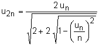
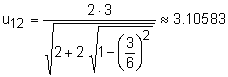

Pi aus Umfang eines n-Ecks durch Eckenverdoppelung
Der Umkreis der n-Ecke habe Durchmesser d = 2r = 1. Man kann zeigen, dass die nachfolgende Formel für den Umfang
u2n des 2n-Ecks aus dem Umfang un des n-Ecks gilt:

Startet man z.B. mit n = 6, so ist u6 = 6 · 0.5 = 3. Daraus lässt sich mit der Formel der
Umfang u12 des 12-Ecks berechnen:

Resultate bis zum 786432-Eck.
| n | un |
| 6 | 3 |
| 12 | 3.10582854123024915 |
| 24 | 3.13262861328123820 |
| 48 | 3.13935020304686721 |
| 96 | 3.14103195089050964 |
| 192 | 3.14145247228546208 |
| 384 | 3.14155760791185765 |
| 768 | 3.14158389214831841 |
| 1536 | 3.14159046322805010 |
| 3072 | 3.14159210599927155 |
| 6144 | 3.14159251669215745 |
| 12288 | 3.14159261936538396 |
| 24576 | 3.14159264503369090 |
| 49152 | 3.14159265145076765 |
| 98304 | 3.14159265305503684 |
| 196608 | 3.14159265345610414 |
| 393216 | 3.14159265355637096 |
| 786432 | 3.14159265358143767 |